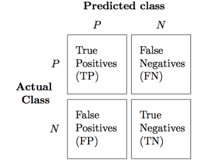
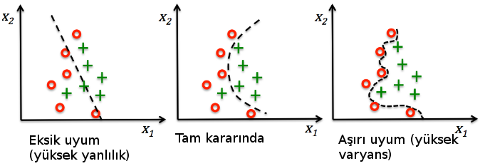
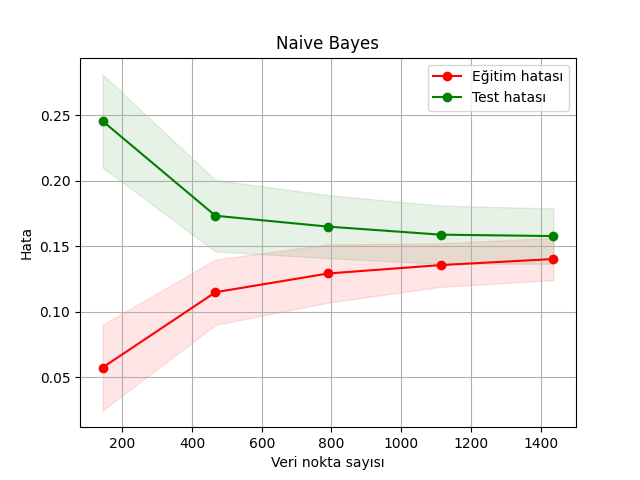
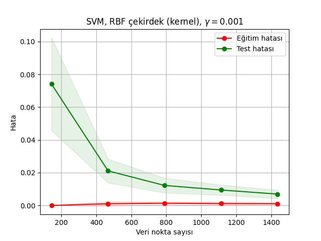
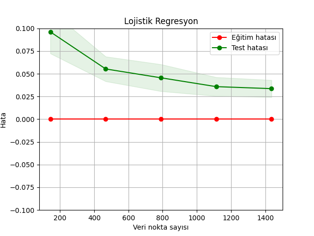

Model Başarısını Ölçmek
Eğitim ve kontrol (validation) verisini ayrı tutmak iyi fikirdir, model
eğitim verisinde eğitilir, kontrol verisinde kontrol edilir. Yani modelin
hiç görmediği veriler üzerinde kontrolünün yapılması gerekir. Bazen bu
ayrışmanın veri üzerinde olan bir değer üzerinden olması da istenebilir,
mesela parakende satış verileri üzerinde eğitim yapıyorsak, bir müşterinin
hem eğitim hem kontrol verisinde olmasını istemeyebiliriz. Bu durumda
ayırma nasıl yapılır? Çok basit bir yöntem kullanıcı kimliği üzerinde
hash çağrısı yapmak ve sonuç üzerinde 2 üzerinden (mesela) modülo
uygulamak. Eğer çift sayı ise eğitim tek ise kontrol. Böylece ayrı bir
liste tutmadan kimliğe bakarak direk ayrımı yapabilmiş oluruz.
Kafa Karışıklığı Matrisi (Confusion Matrix)
İki ya da daha fazla etiketli tahmin problemlerinin sonuçlarını irdelemek
için kafa karışıklığı matrisi (KKM) kullanılabilir. Bu matrisin dikey
eksenini test verisinde gerçekten olan etiket, yatay eksenini tahmin edilen
etiket olarak düşünürsek, kordinate kesişimleri her özgün etiket değeri
için tahmin etme başarısını gösterecektir. Mesela herhangi bir yapay
öğrenim algoritmasından y_tahmin üretilmiş olsun,
from sklearn.metrics import confusion_matrix
y_gercek = ["kedi", "sinek", "kedi", "kedi", "sinek", "balik"]
y_tahmin = ["sinek", "sinek", "kedi", "kedi", "sinek", "kedi"]
print confusion_matrix(y_gercek, y_tahmin, labels=["sinek", "balik", "kedi"])
[[2 0 0]
[0 0 1]
[1 0 2]]
Bakıyoruz gerçekten sinek olduğu zaman 2 kere sinek tahmin edilmiş (matriste sol üst köşe), kedi aynı şekilde iki, ama bir defa kedi için sinek denmiş, bu matrisin sol alt köşesinde. KKM matrisi tüm bu doğruları, hataları tek bir yerde gösterebilen faydalı bir raporlama aracıdır.
Eger sadece iki etiket varsa, matris alttaki gibi olur,

İki etiket durumunda matristeki sayıların özel isimleri var. Her eksende ilk hücre 1 tahmini, diğeri 0 tahmini olursa, üst sol köşedeki tahmin gerçekten 1 olduğu ve 1 tahmin edildiği durum, buna doğru pozitif (true positive) ismi veriliyor. 0 tahmin yapılmış ama aslında etiket 1 ise buna yanlış negatif (false negative), 1 tahmini yapılmış ama 0 ise buna yanlış pozitif (false positive), 0 tahmini yapılmış ve gerçekten 0 ise buna doğru negatif (true negative) ismi veriliyor. Kısaltılmış olarak sırasıyla TP, FN, FP, TN [1, sf. 190].
Doğruluk (Accuracy)
Üstteki değerler ile bazı özet hesaplar var, bunlardan biri doğruluk. Formülü
$$ ACC = \frac{FP + FN}{FP + FN + TP + TN} $$
Kesinlik (Precision)
Diyelim ki bir fotografta 12 kedi, birkac tane fare var. Bir program 8 tane kedi var diyor, ama kedi denen objelerden sadece 5 tanesi gercekten kedi. O zaman programin kesinligi 5/8.
$$ PRE = \frac{TP}{TP + FP} $$
Hatırlama (Recall)
Üstteki örnekte hatırlama 5/12
$$ REC = \frac{TP}{FN + TP} $$
F1 Skoru
Cogu zaman kesinlik ve hatirlamayi birlestirmek iyi bir fikirdir, bu bize F1-Skoru verir,
$$ F1 = 2 \frac{PRE \cdot REC}{PRE + REC} $$
Özetlemek gerekirse doğruluk tahminlerimizin ne oranda doğru olduğudur, fakat bu ölçü eğer eğitim verisinde dengesizlik var ise başarısız olur (100 içinde 90 resim kedi ise sürekli "kedi" cevarı vermek yüzde 90 doğruluk verir ama bu iyi bir algoritma değildir). Kesinlik ise algoritmamiz "kedi" dediği zaman bu cevaplar içindeki doğruluk oranıdır. Yani pozitif tahmin edebilme oranıdır. Hatırlama ise sistemin tüm kediler içinde kaçıni bulabildiğidir, yani doğru pozitif oranı.
AUC
Eğitim verisindeki dengesizliği dikkate alarak başarı hesaplamanın bir yolu şu: algoritmalar 0/1 tahmini yerine "1 olma olasılığı" üretirler, yani 0 ile 1 arası bir sayı. Bu olasılıkları 0/1 tahminine çevirmek kolay, bir eşik değeri kararlaştırırız, ondan büyük olanlar 1 küçükler 0 olur; mesela eşik değeri 0.5 olabilir. AUC hesabı için eşik değerini sürekli değiştirerek bir döngü içinde doğru pozitif oranı, yanlış pozitif oranı hesaplarız, bunu grafikleyince ortaya bir eğri çıkar. Bu eğri 45 derece eğimli düz çizgi ne kadar üzerinde ise algoritmamiz o kadar başarılıdır.
Matthews Korelasyon Katsayısı
AUC kadar iyi işleyen, verideki dengesizliklere dayanıklı bir diğer ölçüt budur. Detaylar için [4] yazısı.
Yanlılık-Varyans Dengesi (Bias-Variance Trade-off)

from sklearn.svm import SVC
from sklearn.naive_bayes import GaussianNB
from sklearn import linear_model
from sklearn import ensemble
from sklearn.model_selection import ShuffleSplit
from sklearn.datasets import load_digits
import lcurve
digits = load_digits()
X, y = digits.data, digits.target
title = "Naive Bayes"
cv = ShuffleSplit(n_splits=100, test_size=0.2, random_state=0)
estimator = GaussianNB()
lcurve.plot(estimator, title, X, y, cv=cv, n_jobs=2)
plt.savefig('modeval_02.png')
title = u'SVM, RBF çekirdek (kernel), $\gamma=0.001$'
cv = ShuffleSplit(n_splits=10, test_size=0.2, random_state=0)
estimator = SVC(gamma=0.001)
lcurve.plot(estimator, title, X, y, cv=cv, n_jobs=2)
plt.savefig('modeval_03.png')
title = "Lojistik Regresyon"
cv = ShuffleSplit(n_splits=10, test_size=0.2, random_state=0)
estimator = linear_model.LogisticRegression()
lcurve.plot(estimator, title, X, y, ylim=(-0.1,0.1), cv=cv, n_jobs=2)
plt.savefig('modeval_04.png')
title = "RandomForestClassifier"
cv = ShuffleSplit(n_splits=10, test_size=0.2, random_state=0)
estimator = ensemble.RandomForestClassifier()
lcurve.plot(estimator, title, X, y, ylim=(-0.1,0.1), cv=cv, n_jobs=2)
plt.savefig('modeval_05.png')



Kaynaklar
[1] Raschka, Python Machine Learning
[2] Ng, Diagnosing Bias vs Variance, https://www.youtube.com/watch?v=ymg03eGEBds
[3] Ng, Regularization and Bias Variance, https://www.youtube.com/watch?v=yzS8bl75FV0
[4] Bayramlı, İstatistik, Beklenti, Varyans, Kovaryans ve Korelasyon